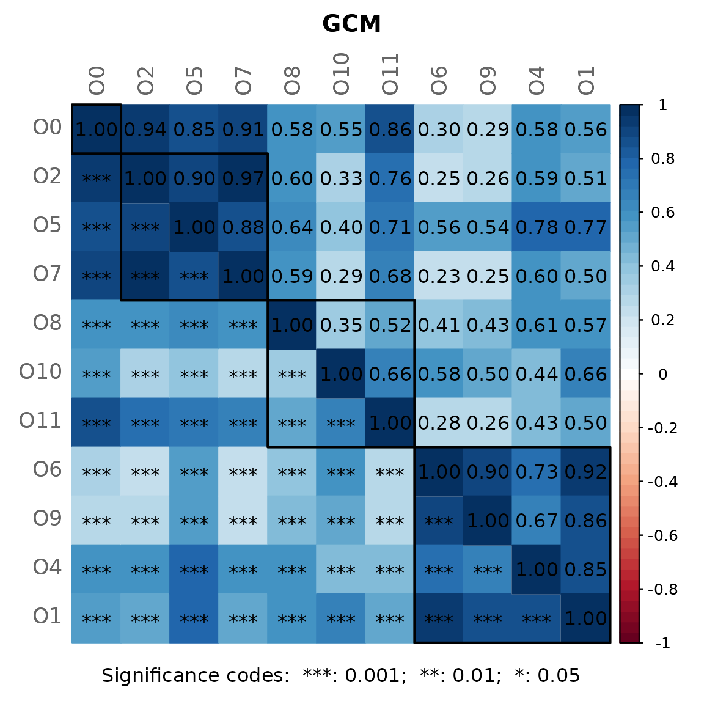

Dissimilarity-based Networks
dissimilarity_networks.RmdIf a dissimilarity measure is used for network construction, nodes are subjects instead of OTUs. The estimated dissimilarities are transformed into similarities, which are used as edge weights so that subjects with a similar microbial composition are placed close together in the network plot.
We construct a single network using Aitchison’s distance being suitable for the application on compositional data.
Since the Aitchison distance is based on the clr-transformation, zeros in the data need to be replaced.
The network is sparsified using the k-nearest neighbor (knn) algorithm.
data("amgut1.filt")
net_diss <- netConstruct(amgut1.filt,
measure = "aitchison",
zeroMethod = "multRepl",
sparsMethod = "knn",
kNeighbor = 3,
verbose = 3)
#> Checking input arguments ... Done.
#> Infos about changed arguments:
#> Counts normalized to fractions for measure "aitchison".
#>
#> 127 taxa and 289 samples remaining.
#>
#> Zero treatment:
#> Execute multRepl() ... Done.
#>
#> Normalization:
#> Counts normalized by total sum scaling.
#>
#> Calculate 'aitchison' dissimilarities ... Done.
#>
#> Sparsify dissimilarities via 'knn' ... Done.For cluster detection, we use hierarchical clustering with average
linkage. Internally, k=3 is passed to cutree()
from stats package so that the tree is cut into 3
clusters.
props_diss <- netAnalyze(net_diss,
clustMethod = "hierarchical",
clustPar = list(method = "average", k = 3),
hubPar = "eigenvector")
#> Warning: The `scale` argument of `eigen_centrality()` always as if TRUE as of igraph
#> 2.1.1.
#> ℹ Normalization is always performed
#> ℹ The deprecated feature was likely used in the NetCoMi package.
#> Please report the issue to the authors.
#> This warning is displayed once every 8 hours.
#> Call `lifecycle::last_lifecycle_warnings()` to see where this warning was
#> generated.
plot(props_diss,
nodeColor = "cluster",
nodeSize = "eigenvector",
hubTransp = 40,
edgeTranspLow = 60,
charToRm = "00000",
shortenLabels = "simple",
labelLength = 6,
mar = c(1, 3, 3, 5))
# get green color with 50% transparency
green2 <- colToTransp("#009900", 40)
legend(0.4, 1.1,
cex = 2.2,
legend = c("high similarity (low Aitchison distance)",
"low similarity (high Aitchison distance)"),
lty = 1,
lwd = c(3, 1),
col = c("darkgreen", green2),
bty = "n")In this dissimilarity-based network, hubs are interpreted as samples with a microbial composition similar to that of many other samples in the data set.